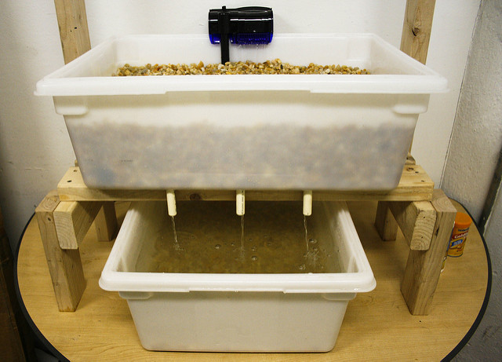

Construir seu próprio sistema de aquaponia residencial é um processo gratificante que une engenharia simples, biologia e sustentabilidade. Para começar, você precisará de uma estrutura básica que garanta a circulação e a saúde do ecossistema.
Materiais Essenciais:
- Tanque de Peixes: Geralmente uma caixa d'água ou reservatório atóxico.
- Área de Plantio: Podem ser canos de PVC, canaletas ou as eficientes camas de cultivo.
- Bomba d'água: O coração do sistema, responsável por elevar a água até as plantas.
- Mídias Filtrantes: Argila expandida, brita ou cascalho para fixação das raízes e colônias de bactérias.

Diagrama de um sistema básico: integração e fluxo constante.As 5 Etapas do Funcionamento:
Peças Chave para sua Construção
A escolha da bomba e do reservatório determina a durabilidade do seu sistema:


Vantagens do Cultivo Vertical e Automático
Diferente do cultivo no solo, a aquaponia oferece ganho ergonômico (você não precisa se abaixar) e evita pragas comuns da terra, como pulgões e parasitas de solo. Se utilizar o plantio vertical em canos, sua produtividade por metro quadrado pode ser até 4x maior.
Embora pareça simples, sistemas pequenos podem enfrentar desafios como o acúmulo de dejetos ou desequilíbrio de pH. Por isso, entender o papel dos filtros e manter a TPA em dia é fundamental.
Pronto para o próximo passo? Vamos detalhar o início do seu projeto no guia completo.